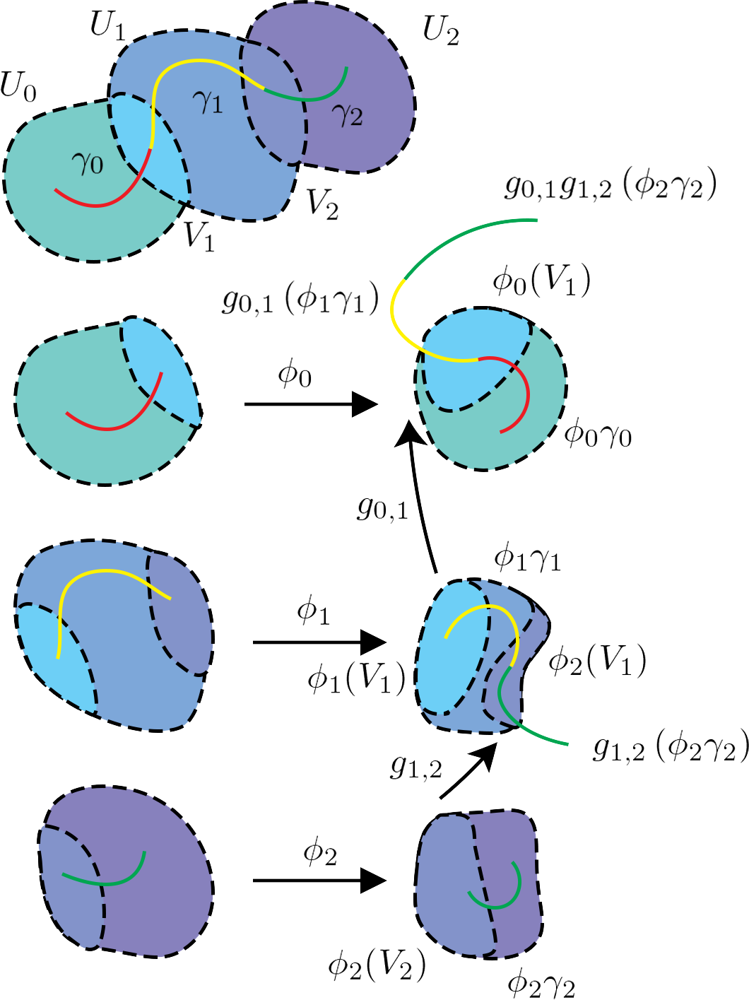
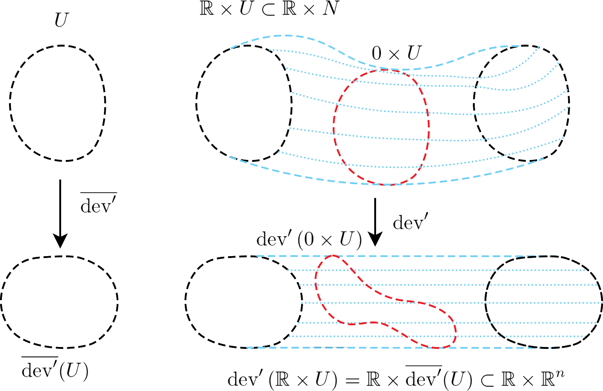

Research and Notes
My area of research is in geometric structures on manifolds, and specifically deformation and rigidity results. I like to think of deforming representations arising from hyperbolic, affine, and projective structures on manifolds in dimension two or three, or, showing you can't do this in an interesting way. Recently my work has been focusing on deforming the hyperbolic structure of once-punctured torus bundles in the hyperbolic and projective setting. My work rephrases this deformation theory in terms of cohomology groups and dynamics. Using computer assisted methods, I've been able to show that a bunch of Dehn-fillings of the figure-eight knot complement can't be deformed to interesting inequivalent projective structures. I've also been thinking of representations of finite groups and their minimal complex and real faithful dimensions.
If I were talking to someone who doesn't think about this stuff constantly I would maybe say, I like to think about different types of geometries than the ones we experience in day to day life. Locally, everything looks pretty flat so a piece of paper is good geometric model, but globally, a sphere works much better. There are other types of geometries you can put on surfaces that aren't spheres or planes. Two main questions in my field of work are, given a space, what type of geometries can you put on it, and in how many inequivalent ways can you do this? Amazingly, there is a strong correspondence between geometry and representing algebraic invariants of your space in terms of matrices. Using a computer, I like to study the correspondence between the matrices and the local geometry in question. I'm exceptionally good at having incorrect ideas, so having a computer to tell me I'm right or wrong is really helpful.
Papers
- The Rubik's Cube and Minimal Representations of Split Group Extensions Justin Kingsnorth (2025)
- Projective Rigidity of Once-Punctured Torus Bundles via the Twisted Alexander Polynomial (2024) [Additional Programs]
- Computer Assisted Projective Rigidity (2024) [Additional Programs]
- Closed Affine Manifolds with an Invariant Line. (in revision)
- Algebraic $k$-systems of Curves. Jonah Gaster, Maxie Lahn, Aisha Mechery, and Simran Nayak. Geometriae Dedicata. 209, 125-134 (2020)